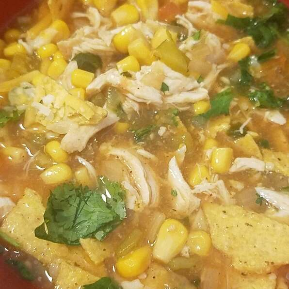

Chicken Tortilla Soup

Some simple modifications can make this delicious soup even healthier! I reduce the sodium by using low-sodium chicken broth and fresh chilies instead of canned. Also, using vegetable cooking spray instead of oil helps reduce the fat content. Adding some tasty fresh toppings helps my family get more vitamins. I also reduce fat by using boneless, skinless chicken breasts.
Nutrition Info
Prep: 40 Minutes
Cook: 3 hours
Total: 3 hours 40 Minutes
Servings: 8
Yield: 8 Servings
Per Serving: 208 calories; protein 15.3g; carbohydrates 23.7g; fat 6.8g; cholesterol 42.9mg; sodium 438.2mg
Ingredients
- 1 pound bonless, skinless, chicken breasts, cut into strips
- 1 (15 oz) can whole peeled tomatoes, mashed
- 1 (10 oz) can enchilada sauce
- 1 medium onion, chopped
- 2 banana peppers, chopped
- 2 cloves garlic, minced
- 2 cups water
- 1 (14.5 oz) can reduced-sodium chicken broth
- 1 teaspoon cumin
- 1 teaspoon chili powder
- 1 teaspoon salt
- 1/4 teaspoon ground black pepper
- 1 bay leaf
- 1 (10 oz) package frozen corn
- 1 tablespoon choppped cilantro
- 7 corn tortillas
- vegetable cooking spray
- Place chicken, tomatoes, enchilada sauce, onion, banana peppers, and garlic into slow cooker. Pour in water and chicken broth. Season with cumin, chili powder, salt, ground pepper, and bay leaf. Stir in corn and cilantro. Cover and cook on Low for 6 to 8 hours, or on High for 3 to 4 hours.
- Preheat oven to 400 degrees F (200 degrees C).
- Lightly coat both sides of tortillas with cooking spray. Cut tortillas into strips, then spread on a baking sheet.
- Bake in preheated oven until crisp, 10 to 15 minutes. Sprinkle tortilla strips over soup.